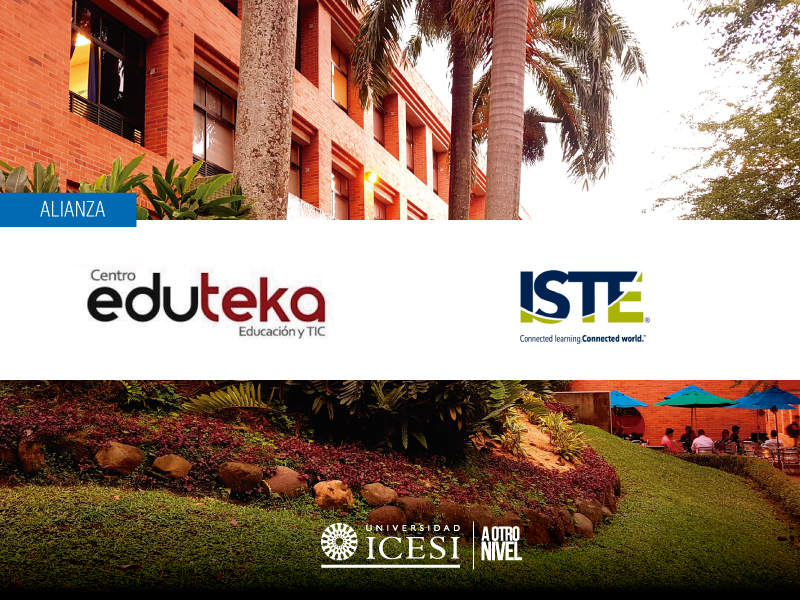

Eduteka es un Portal Educativo gratuito, que tiene como misión promover el mejoramiento de la calidad de la educación básica y media
es el Portal de libre acceso para docentes y directivos escolares interesados en mejorar la educación con el apoyo de las Tecnologías de la Información y las Comunicaciones y en formar a sus estudiantes en el manejo de esas Tecnologías.
Eduteka investiga de manera permanente temas de interés para los docentes, publicándolos en una forma sencilla, clara y pedagógica, lo que fomenta el trabajo colaborativo en red e impulsando estrategias para acompañar a los docentes, con el propósito que accedan con facilidad a los entornos colaborativos
Se busca que el estudiante utilice metodologías y estructuras secuenciales, iterativas y condicionales para analizar problemas, diseñar algoritmos, traducir algoritmos a un lenguaje de programación y depurar
procedimientos sencillos con el fin de solucionar problemas. Los estudiantes no elaborarán programas complejos, sólo se concentrarán en la
elaboración de procedimientos.